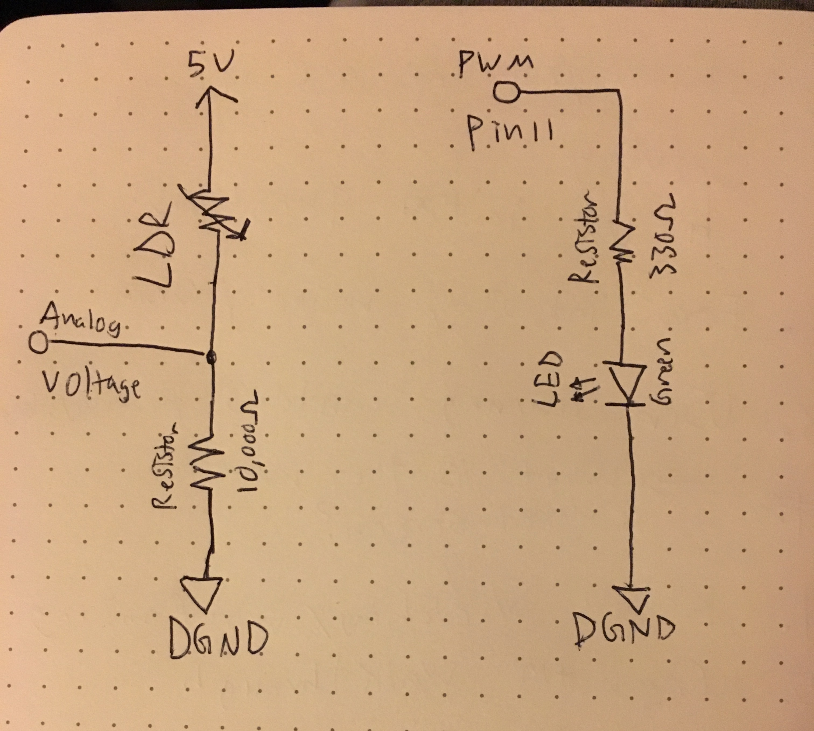
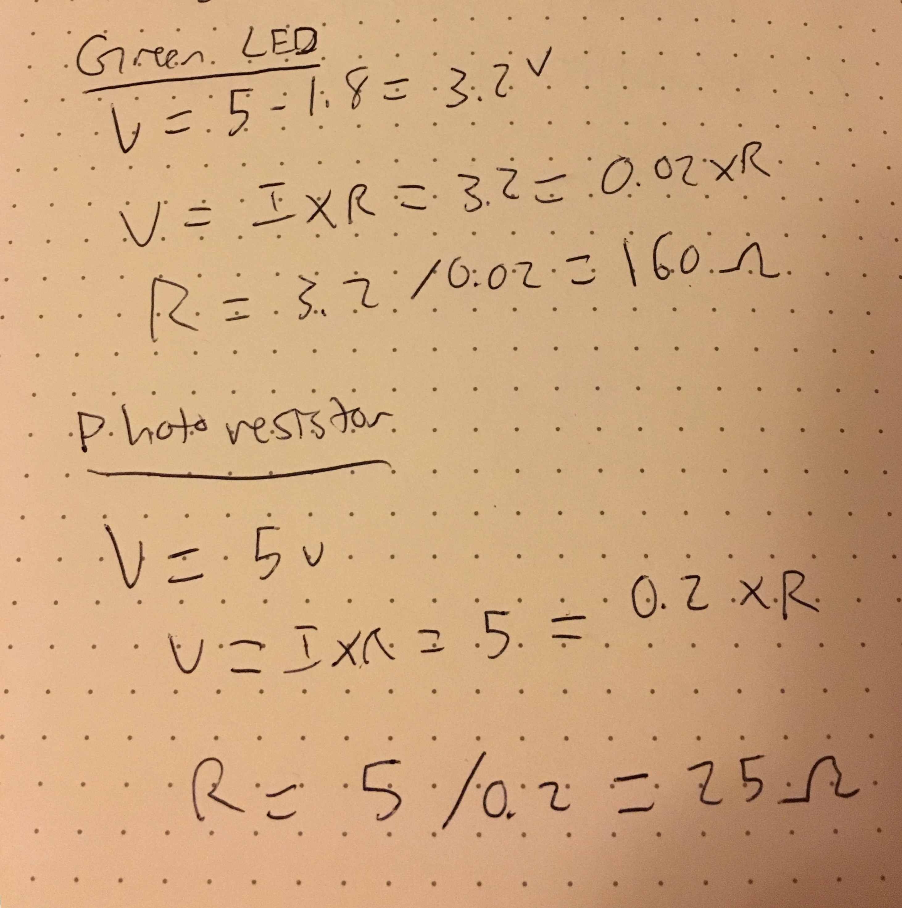
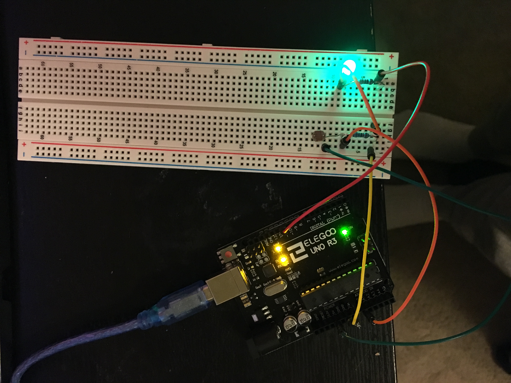

Garrett's Assignment 6 - Datalogging!
Schematic
I used a photoresistor to convert to serial monitor values and a green LED to translate serial monitor values to brightness as a visual affordance. Key parts of the schematic include: green LED and 330 ohm resistor connected to pin 11, photoresistor and 10k ohm resistor connected to input Analog 0.
Calculations
In order to prevent the circuit from shorting and breaking pieces, I calculated resistance values. Using Ohm's law to calculate the resistance values, I calculated the required minimum resistance of the green LED and the photoresistor. I assumed minimum current usage of LED's to be 0.02mA and photoresistor 200mA. Thus, calculated a minimum resistor value for green LED as 160 ohms and photoresistor, a minimum of 25 ohms. I used a 330 ohm resistor for LED and 10k ohm resistor for photoresistor, to ensure nothing breaks. Specific calculations are below:
Circuit
Firmware
The sketch.js file populates small stars that moves in a circular motion and the star's size is connected to the serial monitor mapped values. When I release my fingers off the photoresisitor, the screen populates large stars, connected to larger serial monitor mapped values.
var serial; // variable to hold an instance of the serialport library
var portName = '/dev/cu.usbmodem1421' //rename to the name of your port
var datain; //some data coming in over serial!
function setup() {
serial = new p5.SerialPort(); // make a new instance of the serialport library
serial.on('list', printList); // set a callback function for the serialport list event
serial.on('connected', serverConnected); // callback for connecting to the server
serial.on('open', portOpen); // callback for the port opening
serial.on('data', serialEvent); // callback for when new data arrives
serial.on('error', serialError); // callback for errors
serial.on('close', portClose); // callback for the port closing
serial.list(); // list the serial ports
serial.open(portName); // open a serial port
createCanvas(1200, 800);
background(0x08, 0x16, 0x40);
}
// get the list of ports:
function printList(portList) {
// portList is an array of serial port names
for (var i = 0; i < portList.length; i++) {
// Display the list the console:
print(i + " " + portList[i]);
}
}
function serverConnected() {
print('connected to server.');
}
function portOpen() {
print('the serial port opened.')
}
function serialError(err) {
print('Something went wrong with the serial port. ' + err);
}
function portClose() {
print('The serial port closed.');
}
function serialEvent() {
if (serial.available()) {
datain = Number(serial.readLine());
//console.log(datain);
}
}
//create a star on the screen
function draw() {
push();
translate(width * 0.8, height * 0.5);
rotate(frameCount / -100.0);
star(100, -100, 30, datain, 5);
pop();
}
//animate star to move in circular motion
function star(x, y, radius1, radius2, npoints) {
let angle = TWO_PI / npoints;
let halfAngle = angle / 2.0;
beginShape();
for (let a = 0; a < TWO_PI; a += angle) {
let sx = x + cos(a) * radius2;
let sy = y + sin(a) * radius2;
vertex(sx, sy);
sx = x + cos(a + halfAngle) * radius1;
sy = y + sin(a + halfAngle) * radius1;
vertex(sx, sy);
}
endShape(CLOSE);
}
Operating Circuit
Here is an animated GIF of everything in action! It's basically a crazy star that starts small when photoresistor is a small value, turns large when photoresisitor is uncovered and reads larger values.